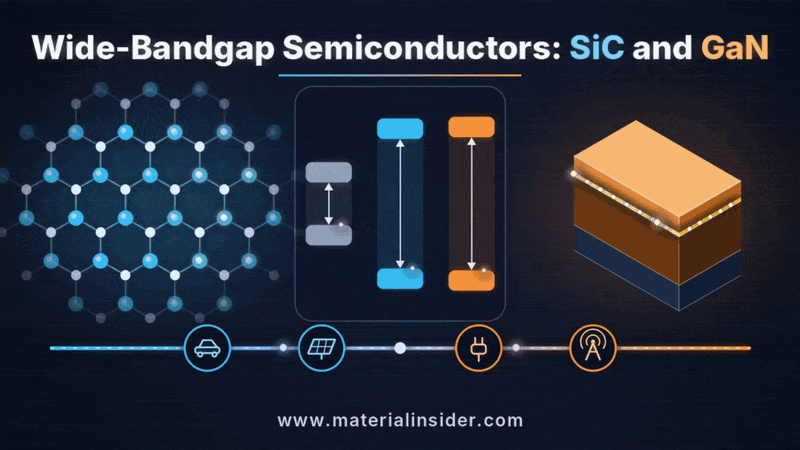
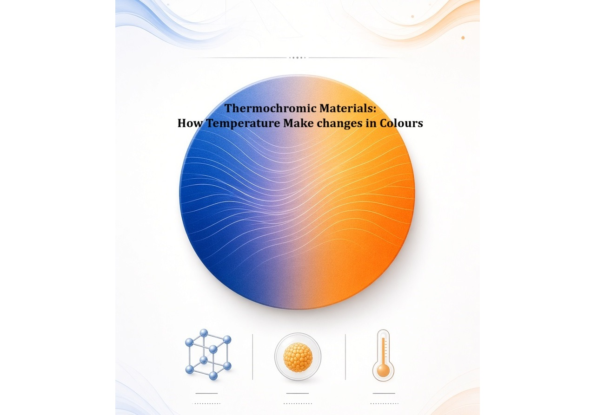
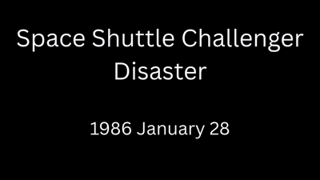
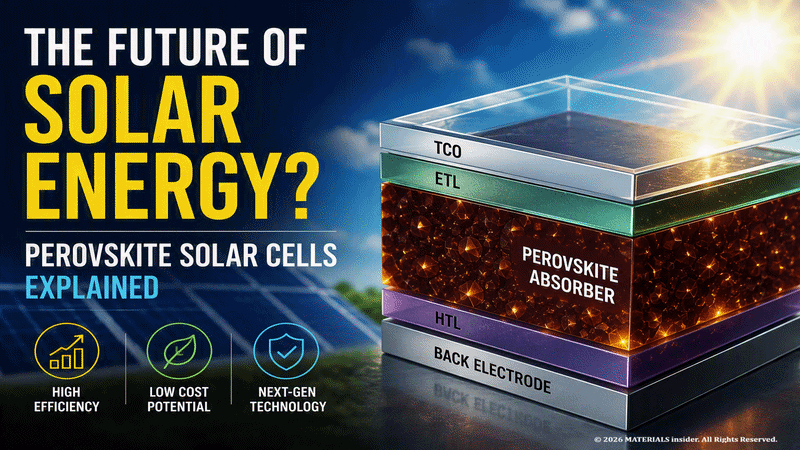
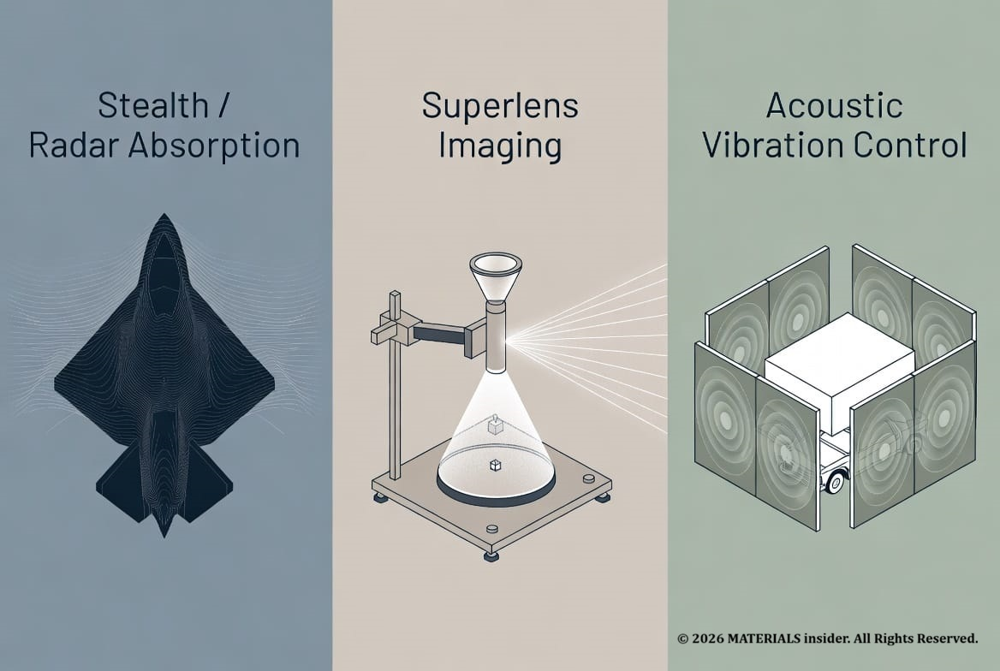

Silicon Carbide and Gallium Nitride: The Materials Powering the Next Generation of Electric Vehicles and Fast Chargers
Silicon carbide (SiC) and gallium nitride (GaN) are wide-bandgap semiconductors reshaping electric vehicles, fast chargers and power electronics. See what happens inside the crystal and where they are used.
Read Full Article →Cold Gas Thrusters: How Tesla’s Roadster Uses Compressed Air Instead of Fire
Cold gas thrusters use compressed inert gas to create thrust without combustion. See how Tesla demonstrated this technology on the next-generation Roadster and what happens at the molecular level.
Read Full Article →
CCD Chips: Silicons That Turned Photons into Perfect Digital Eyes
CCD chips convert photons into electrons via the photoelectric effect in silicon, powering digital cameras, space telescopes, and X-ray detectors with near-perfect quantum efficiency and ultra-low noise.
Read Full Article →
Magnetism for Recording Devices
Magnetism in ferromagnetic materials is the hidden physics that lets hard disks & magnetic tapes store digital data for without power. Data storage is not an electronic process but a property of the materials.
Read Full Article →
Thermochromic Materials: How Temperature Make changes in Colors
Thermochromic materials are temperature-responsive materials offering reversible thermochromism. Technologies including leuco dye thermochromism, VO₂ thermochromic smart windows, and microencapsulated thermochromic pigments enable innovative color-changing applications and energy-efficient passive solar regulation.
Read Full Article →Tacoma Narrows Bridge Collapse (1940)
The Tacoma Narrows Bridge Collapse of 1940 remains one of the most important engineering failures in history and a classic materials science case study which was caused by aeroelastic flutter rather than simple resonance.
Read Full Article →
Space Shuttle Challenger Disaster (1986)
The Space Shuttle Challenger disaster was NOT caused by a rocket engine failure or software malfunction. The root cause was the loss of sealing performance in rubber O-rings located within the Solid Rocket Booster.
Read Full Article →Why Microplastics Are Becoming a Materials Science Problem
Microplastics are no longer just an environmental issue. Learn how polymer degradation, material failure mechanisms, and sustainable design are turning microplastics into one of the biggest challenges in modern materials science.
Read Full Article →The Hidden Materials Powering the AI Revolution
AI is booming, but few people understand the materials behind it. Every ChatGPT, GROK query, every image generation, every self-driving decision runs on physical chips built from carefully engineered atoms. The real race isn’t just algorithms.
Read Full Article →
Atomic Magic: How 20-Something Scientists Are Hacking Solar Power with Perovskites
Picture this: a super-thin, bendy film that sucks up sunlight like a sponge and pumps out electricity almost as well as those heavy, expensive silicon panels—but costs way less and can stick on your backpack, car, or even windows.
Read Full Article →
Impossible Engineering for Stealth and Cloaking : Metamaterials
Imagine slipping on a jacket that bends light around you so perfectly that you vanish from sight. Theese crazy properties come from structure, not chemistry. This isn’t just lab magic. Metamaterials are already showing up in serious tech.
Read Full Article →
Sri Lanka's Vein Graphite - Supercharging the Global EV Battery Revolution
Sri Lanka's world-unique high-purity vein graphite is becoming a critical material for lithium-ion battery anodes
Read Full Article →
The Shape Memory Alloy: The Magic Metal That Remembers Its Shape
Imagine bending a thin metal wire into any shape you want — a zigzag, a loop, or even crumpling it — and then simply dipping it in hot water or warming it gently. Within seconds, it snaps back perfectly to its original straight form, as if it has a built-in memory.
Read Full Article →
Fermi Seas at the Atomic Scale: A Strange New Quantum State
Researchers have created an entirely new type of quantum matter called a fractional Fermi sea using ultracold cesium atoms confined to one dimension in June 2026.
Read Full Article →
The Illusion of Touch at the Atomic Scale: Interatomic Distances and Forces in Materials Science
Solids feel rigid and surfaces appear to make contact, yet atoms never truly touch in the classical sense. Instead, what we perceive as touch arises from the balance of attractive and repulsive forces between electron clouds.
Read Full Article →
Superconductors: China’s Record-Breaking Superconducting Magnet with Unlimited Clean Energy
On June 27, 2026, scientists and engineers in Hefei, Anhui Province, announced a historic milestone: the completion and successful testing of the world’s largest superconducting magnet ever built for a fusion reactor.
Read Full Article →
Self-Healing Materials : The Future of Sustainable & Self Sustainable Materials
A cracked smartphone screen that repairs itself overnight, or a bridge that can automatically fix tiny fractures before they become dangerous. This is not science fiction—these are examples of self-healing materials.
Read Full Article →
Next-Gen Self-Sustain Electrical Batteries
Use synthetic diamond to convert the beta decay of radioactive carbon-14 (¹⁴C) into a steady trickle of electricity
Read Full Article →
Non-Newtonian Fluid : A substance that does not follow Isaac Newton’s laws
Most of us think of fluids like water or air as predictable: they flow easily, and their "thickness" (viscosity) stays constant no matter how fast you stir them. These are Newtonian fluids, but many real-world some substances break these rules.
Read Full Article →
Rheopectic Fluids: Time-Dependent Thickening Under Stress
These rare materials gradually increase in viscosity (become thicker) the longer they experience sustained shear stress. Unlike instantaneous shear-thickening (dilatant) behavior, rheopecty requires prolonged agitation: the more you stir or shake (within limits), the more resistant to flow the fluid becomes.
Read Full Article →